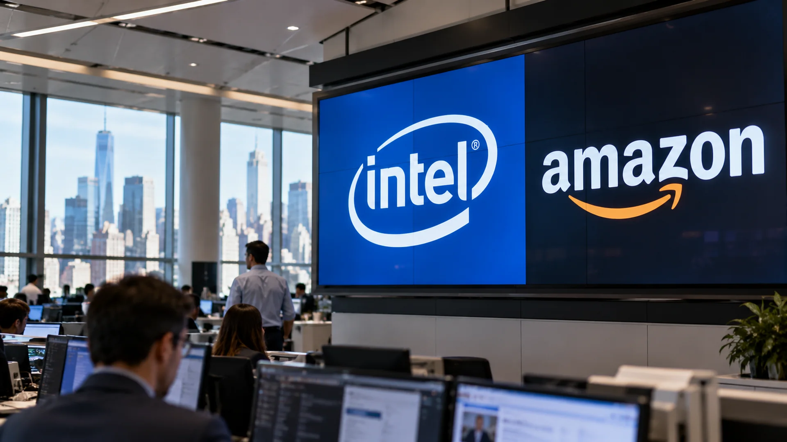

Intel's 28.6% Fall and Amazon's AI Spending Test Tech Stocks
Intel slid 28.6% while Amazon investors focused on mounting AI capital costs, even as AWS growth accelerated.

Intel's 28.6% decline on Friday, October 30, 2026, and a disappointing market reaction to Amazon's quarterly report helped drive a broader sell-off in US technology shares. The two companies faced different operational challenges, but the market connected them through a common question: how quickly will the enormous costs of artificial-intelligence infrastructure translate into dependable cash generation?
Intel's results were stronger than its forecast
Intel reported third-quarter revenue of $16.5 billion, an increase of 21% from a year earlier, and non-GAAP earnings of $0.52 a share. Those results were not the principal problem. Management forecast fourth-quarter revenue of $15 billion to $16 billion, and non-GAAP earnings of $0.25 a share, citing pressure in the personal-computer business and supply constraints. The outlook was worse than investors had expected. Investors punished the stock despite the improvement in reported quarterly performance.
Reuters reported Intel fell 28.6% on Friday; Associated Press described it as the chipmaker's steepest daily drop since 1974. Those descriptions refer to the trading session, not to Intel's decline over the entire year. They also illustrate why a headline about a weak report needs precision: the company beat some third-quarter expectations while disappointing on what it expected next. Calling the complete report a failure would miss that distinction.
Intel's situation is not a straightforward measure of AI profitability. The company sells processors into both client computers and servers, while investing in chipmaking capacity and trying to improve manufacturing execution. Demand for data-center hardware may remain robust even when orders from PC makers weaken. Investors are being asked to assess how these businesses affect margins, working capital and longer-term cash flow simultaneously.
Amazon's cash flow became the bigger concern
Amazon's third-quarter net sales increased 12% to $201.9 billion. Its cloud business, Amazon Web Services, grew sales by about 39% to $46 billion, the fastest growth rate in nearly five years. Operating income reached $28.1 billion. These figures, published in Amazon's official earnings release, are important counterweights to an overly simple narrative that demand for AI services has disappeared.
The difficulty lay in the cost of supplying that demand. Amazon reported a trailing-12-month free-cash-flow outflow of $42.4 billion, compared with positive free cash flow of $14.8 billion in the year-earlier period. Management said the deterioration primarily reflected spending on property and equipment, much of it tied to artificial intelligence. The company continued to expect around $220 billion in capital expenditure during 2026. Its fourth-quarter sales guidance of $240 billion to $247 billion also disappointed analysts at the midpoint, according to Reuters.
For investors, high cloud growth and weak free cash flow can coexist. The company may have a compelling long-term opportunity while still facing a period of intense spending before the investment yields adequate returns. This is why the market response cannot be explained by revenue or earnings per share alone.
Technology shares bore the brunt
The Nasdaq Composite fell 2.9% on Friday, according to Reuters, while the Nasdaq-100 index closed at 28,384.85, down about 3.46% for the day according to Nasdaq index data. These are different benchmarks and should not be used interchangeably. The S&P 500 fell roughly 1.8%, according to Associated Press. Semiconductor shares also came under pressure, reflecting uncertainty about the pace and economics of AI investment.
A sharp fall on one day is not proof that the AI investment cycle is over. It does show that investors are increasingly differentiating between revenue growth, the amount of cash spent to achieve it and the likely returns on new capacity. The distinction matters for chip suppliers, cloud operators and the companies that finance new data centers. Readers can find additional context in TTN Finance's analysis of power constraints on AI data centers and its coverage of the Federal Reserve's October rate decision.
What the next earnings will need to show
For Intel, the test is whether the fourth-quarter shortfall is temporary and whether higher-value data-center demand can offset weakness elsewhere. For Amazon, attention will shift to capital spending, the pace of AWS growth and whether investment begins to produce stronger free cash flow. Neither company can be judged only by its share-price response to a single earnings announcement.
The broader market will also watch financing conditions, since changes in interest rates affect the valuation of investments whose cash returns may lie years in the future. These are questions about timing and economic returns, rather than a single verdict on the usefulness of AI technology. The immediate lesson of October 30 is that investors want clearer evidence of financial discipline alongside growth.